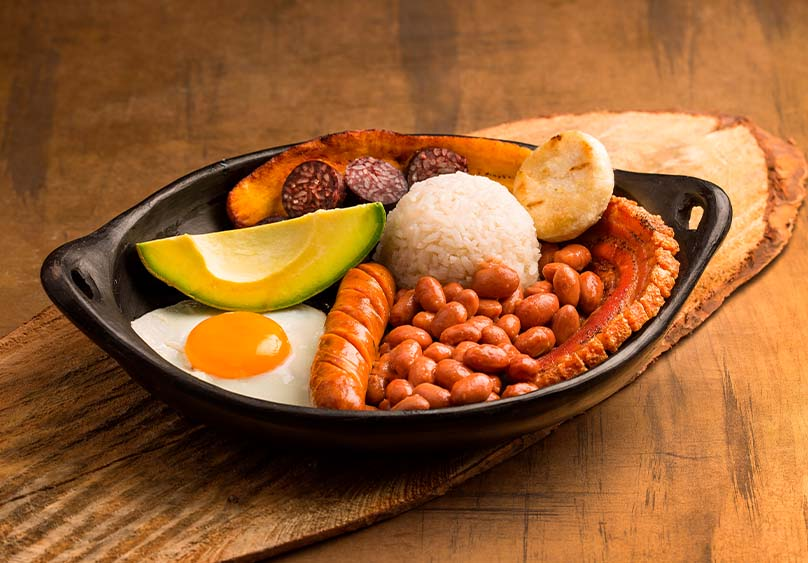

COMIDA MEXICANA
La comida mexicana es una rica y diversa tradición culinaria que mezcla ingredientes autóctonos como maíz, chiles y frijoles con influencias europeas, especialmente españolas. Platillos emblemáticos como los tacos, enchiladas y tamales destacan por sus sabores intensos y variados, muchas veces acompañados de salsas picantes. La cocina mexicana también es conocida por su uso de hierbas frescas como el cilantro y el epazote, así como por la popularidad de bebidas como el tequila y el mezcal. Esta gastronomía ha sido reconocida por la UNESCO como Patrimonio Cultural Inmaterial de la Humanidad.

COMIDA SALVADOREÑA
La comida salvadoreña es conocida por su sencillez y sabor, con las pupusas como su platillo más emblemático. Estas tortillas de maíz o arroz, rellenas de queso, frijoles, chicharrón u otros ingredientes, son el alma de la cocina salvadoreña. Otros platillos destacados incluyen el tamal de elote, las yucas fritas con chicharrón, y el curtido, una ensalada fermentada de repollo que acompaña a las pupusas. La gastronomía salvadoreña refleja una mezcla de influencias indígenas y españolas, con ingredientes básicos como el maíz, los frijoles y las hierbas frescas.

COMIDA COLOMBIANA
La comida colombiana es diversa y refleja la riqueza cultural del país, con una mezcla de influencias indígenas, africanas y españolas. Platos icónicos incluyen la arepa, una tortilla de maíz que se puede rellenar o acompañar con diversos ingredientes, y la bandeja paisa, un abundante plato que combina arroz, frijoles, carne, chicharrón, huevo y aguacate. La ajiaco, una sopa espesa hecha con tres tipos de papa y pollo, es otro clásico colombiano. Además, la gastronomía colombiana destaca por su uso de ingredientes frescos como la yuca, el plátano y el cilantro, y por sus bebidas tradicionales como el café y el jugo de lulo.